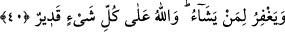

Teâlâ’nın ona sunduğu tevbe nîmetinin büyüklüğünün beyânı babındandır.
“Ve durumunu düzeltirse”, yani yaptığı işin sonuçlarından kurtularak ve tekrar
hırsızlığa dönmemeye azmederek kendisini düzeltirse “şüphesiz Allah onun tevbesini
kabûl eder.” ve âhirette azap etmez. El kesme cezâsını, bize (Hanefîlere) göre tevbe
düşürmez. Çünkü onda malı çalınanın hakkı vardır.
Haddadî de şöyle demiştir: “Hırsız, hâkime başvurulmadan önce çaldığı malı iâde
ederse eli kesilmez. Fakat hırsız mahkemeye verilmişse ve ondan sonra tevbe ederse
elinin kesilmesi vâcibdir. Şayet o hırsız gerçekten tevbe etmişse bu onun âhiretteki
derecesinin artmasını sağlar. Nitekim Allah Teâlâ sâlihleri ve peygamberleri
derecelerinin artması için çeşitli imtihanlar, sıkıntılar ve hastalıklar ile denemiştir. Eğer
hırsız tevbesinde samîmî değilse, had onun suçunun cezâsıdır. Tevbe etmediği için
âhirette de sorumludur. “Allah çok bağışlayıcı ve esirgeyicidir.” Mağfiret ve rahmeti
fazla olandır. Bu sebeple tevbeyi kabûl eder.
40- Bilmez misin ki, göklerde ve yerde ne varsa hepsinin mülkiyeti Allah’a aittir;
dilediğine azap eder ve dilediğini bağışlar. Allah her şeye hakkıyle kadirdir.
“Göklerin ve yerin sahibinin Allah olduğunu bilmedin mi?” Buradaki hitap
Rasûlullah (s.a.)’e dir ama murad bütün müslümanlardır. İstifhâm-ı inkârî bu bilgiyi
pekiştirmek içindir. Bundan maksat ise zikredilecek olan azap etme ve bağışlanma
husûsunda Allah’ın kudretinin en tesirli ve kâmil bir sûrette olduğuna şâhit tutmaktır.
Yani, Allah’ın gökler, yer ve onlarda var olan şeyler üzerinde irâdesi muktezâsınca var
etme, yok etme, öldürme, diriltme ve bunlardan başka konularda küllî tasarrufta
bulunmak için tam bir kudreti gerektiren güçlü bir hâkimiyete ve üstün bir otoriteye
sâhip olduğunu bilmez misin?
Küçük bir günaha karşılık da olsa O, azap etmeyi “dilediğine azap eder.” Bu, O’nun
adâletindendir. Günah büyük bile olsa, bağışlamayı “dilediğini bağışlar.” Bu da O’nun
fazlındandır. Yani O, hikmetinin azap edilmesini gerektirdiği kimseye azap eder ve
hikmetinin bağışlanmasını gerektirdiği kimseyi bağışlar.
“Allah her şeye kâdirdir.” Zikredilen azap etme ve bağışlamaya muktedirdir.
Şeyhzâde şöyle demiştir: “Allah Teâlâ hırsızın elinin kesilmesini ve tevbe etmeden
önce ölmesi hâlinde âhiret azâbını vâcib kıldıktan sonra tevbe ettiği takdirde tevbesini
kabul edeceğini zikretmiş, daha sonra da “Dilediğini yapar, dilediği şekilde hükmeder,
dilediğine azap edip dilediğini bağışlar.” şeklindeki beyânını getirmiştir. Bazen
Allah’ın azabı güzel olur, bazen de mağfireti. Çünkü Allah bütün varlıkların mâliki,
Rabbi ve İlâhıdır. Mâlik olanın, mülkünde dilediği ve istediği gibi tasarruf hakkı vardır.
Mu’tezile’nin: “Allah Teâlâ’nın güzel fiillerde bulunuyor olması, mahlûkâtın ilahı ve